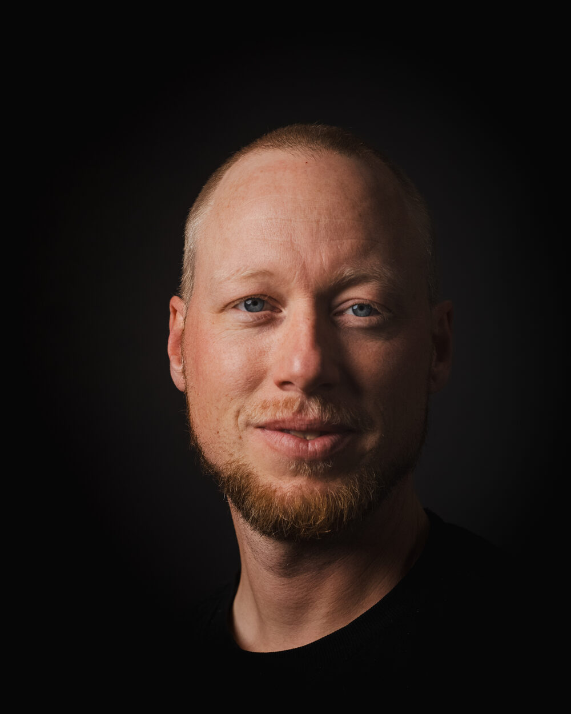
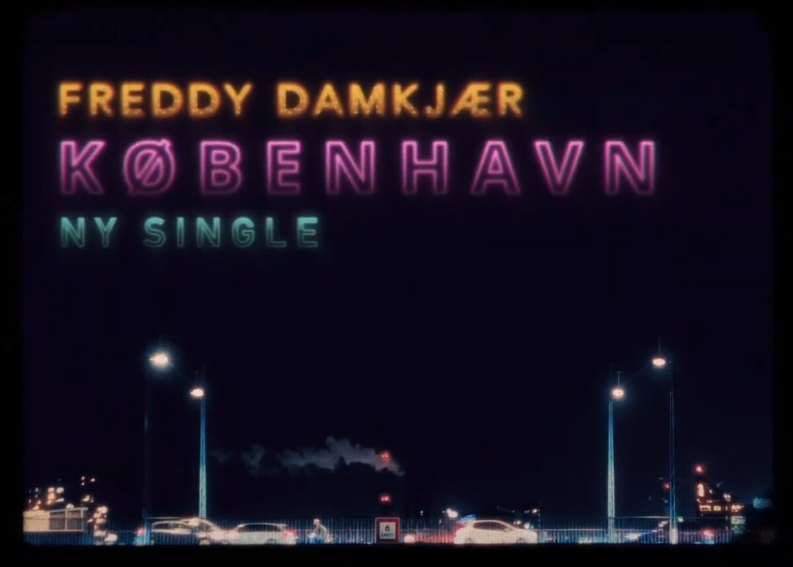
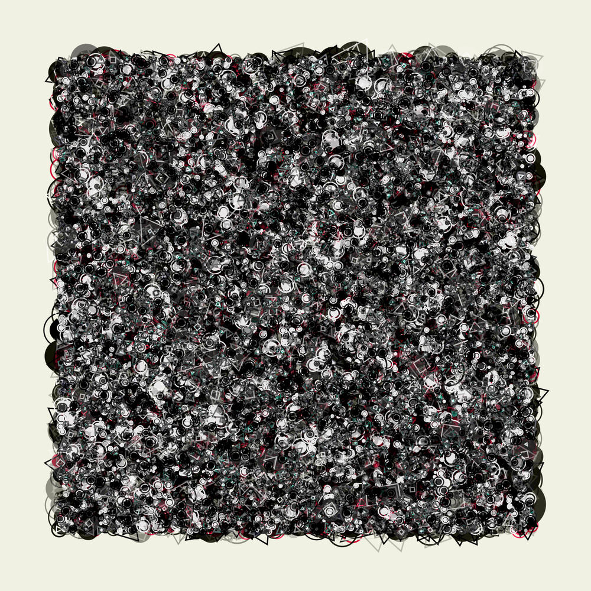

Om mig
Forsiden fortæller, hvad jeg kan. Den her side fortæller, hvordan jeg endte med at kunne det. Fire kapitler, i den rækkefølge de skete.
Sproget
Min morfar kæmpede på tysk side under Anden Verdenskrig. Han deserterede til Bornholm, blev fanget af modstandsbevægelsen, og endte med at blive hjulpet i sikkerhed af de samme folk, fordi han trods alt var dansker. Den historie lærte mig tidligt, at det er handlinger og ikke etiketter, der definerer et menneske.
Den anden ting, jeg har taget med mig hele livet, er billeder. Jeg husker og forstår verden visuelt, og et billede kan bære en følelse længere, end en forklaring kan.
Så da jeg skulle vælge fag, blev det tysk med sidefag i film- og medievidenskab på Københavns Universitet. To fag der på papiret ikke har meget med hinanden at gøre, men som handler om nøjagtig det samme: hvordan betydning flytter sig fra afsender til modtager uden at gå i stykker undervejs.
Tysk lærte mig, at et sprog ikke er en bunke ord, men et system man kan lære sig at bevæge sig rundt i. Film lærte mig, at rækkefølgen af det, folk får at se, afgør hvad de forstår. Tilsammen gav de to fag mig blik for de nuancer og den fortælling, der ligger bag ethvert stykke ordentligt arbejde. Begge dele bruger jeg stadig, hver gang jeg planlægger en workshop.
Og morfars historie er der også stadig. Der sidder altid nogen i lokalet, som på forhånd er blevet kaldt teknologiforskrækket eller for gammel til det her. Etiketten passer næsten aldrig. Folk overrasker, når man giver dem noget at gøre i stedet for noget at være.

Det er handlinger og ikke etiketter, der definerer et menneske.
Klasselokalet
Tolv år som gymnasielærer. Det er tolv år med at stå foran mennesker, der ikke selv har valgt at være der klokken otte om morgenen, og alligevel finde ud af, hvordan man får dem med.
Det er stadig den vigtigste erfaring, jeg har. Ikke fordi voksne i en virksomhed opfører sig som gymnasieelever, men fordi mekanikken er den samme: folk lærer ikke af at få noget forklaret. De lærer af at prøve, fejle og prøve igen, mens der er nogen til stede der kan hjælpe. Alt hvad jeg laver i dag, står på den erkendelse.
Jeg husker et tyskhold, der skulle omskrive en kendt børnesang til deres egen og indspille en video til den. De var et af de dygtigste hold, jeg har haft, og netop derfor vidste jeg, at det, der holdt dem tilbage, ikke var evner, men mod. Så jeg lagde opgaven et godt stykke uden for deres comfortzone. En gruppe kom tilbage og bad om fjorten dages udsættelse. Jeg kendte dem godt nok til at vide, at det ikke var dovenskab: de havde fået en idé, der var større end min opgave. Da de afleverede, havde de skrevet, produceret og indspillet deres eget trip hop-nummer og lavet en musikvideo til det. Fra den dag holdt ingen i gruppen sig tilbage igen.
Min opgave var ikke at lære dem noget den dag. Den var at gøre rammen stor nok til, at de turde fylde den ud. Det er stadig den sværeste del af arbejdet, og den der afgør, om noget bliver hængende.
Undervejs blev jeg IT-vejleder og medlem af skolens AI-udvalg. Det betød, at jeg både sad med ledelsen og skulle beslutte, hvad skolen overhovedet skulle med AI, og bagefter stod i lokalet med de kolleger, beslutningen ramte. At have prøvet begge sider har lært mig mere om forandring end nogen bog om forandringsledelse kunne.
Min opgave var ikke at lære dem noget. Den var at gøre rammen stor nok til, at de turde fylde den ud.
- Sted
- Greve Gymnasium
- Rolle
- Gymnasielærer i tysk
- Varighed
- 12 år
- Sideroller
- IT-vejleder og medlem af AI-udvalget
- 01
- Læs rummet, ikke kun planen
- 02
- Differentiér, også for voksne
- 03
- Stil opgaver, folk kan vokse i
- 04
- Beslutning og gulv er to forskellige verdener
Maskinen
Da de generative modeller kom, gjorde jeg det, jeg altid har gjort med ny teknologi: skilte den ad. Sådan har det været, siden jeg som barn sad ved familiens Olivetti, hvor man ved opstart valgte mellem Windows 3.11 og DOS, alt efter om der skulle arbejdes eller spilles DOOM 2. Dengang var en computer besværlig at have med at gøre, og det er nok derfor, at intet siden har føltes uoverkommeligt.
I stedet for at se sprogmodellerne som en ødelæggende faktor, var jeg nødt til at finde ud af, hvordan de kunne løfte mine arbejdsgange. Først prompt engineering, så Claude Code, så en RAG-løsning oven på skolens egen dokumentation og automatiserede skabeloner til undervisningen. Ikke fordi det var den hurtigste vej til en chatbot, men fordi jeg ikke kan undervise troværdigt i noget, jeg kun har læst om.
Det samme gælder alt andet. Min computer kører en Linux-opsætning, jeg har bygget fra bunden, fordi jeg gerne vil vide, hvad der sker under overfladen. Denne hjemmeside er skrevet i hånden, uden framework, af samme grund. Det er ikke nørderi for nørderiets skyld: det er sådan jeg lærer, og det er derfor jeg kan svare på spørgsmål, der ligger uden for slidesene.
Det visuelle begyndte tidligere. Min filminteresse førte mig til faget film og tv i gymnasiet, og det var der, jeg lærte de tunge redigeringsprogrammer at kende. I dag er DaVinci Resolve mit hovedværktøj, og jeg finder hurtigt rundt i Photoshop og Blender. Ved siden af fotograferer jeg og tegner i Procreate. Det er ikke arbejde, men det er den samme muskel som filmvidenskaben trænede: at beslutte hvad der skal være i billedet, og hvad der skal ud. Den beslutning er præcis den samme, når jeg klipper et videokursus ned til det, der faktisk skal siges.
Den røde tråd er aldrig teknikken i sig selv. Det er den kreative tilgang koblet med nysgerrigheden efter at gøre teknologien til medspiller frem for modspiller, i mine egne projekter såvel som professionelt.
Jeg kan ikke undervise troværdigt i noget, jeg kun har læst om.
- Claude Code
- Ollama
- Open WebUI
- RAG
- Agent-workflows
- Python
- JavaScript
- Linux
- DaVinci Resolve
- Photoshop
- Blender
- Procreate
- Processing

Nu
Jeg har brugt tolv år på at gøre svært stof brugbart for mennesker, der ikke selv havde bedt om det. Nu vil jeg gøre det samme et sted, hvor stoffet er AI, og hvor modtagerne er organisationer, der har investeret i noget, de endnu ikke får nok ud af.
Jeg tror ikke på AI som en erstatning for faglighed. Jeg tror på AI som et værktøj, der kan blive farligt i hænderne på nogen, der ikke selv kan vurdere svaret, og virkelig stærkt i hænderne på nogen, der kan. Derfor handler mit arbejde lige så meget om dømmekraft som om teknologi. Det er også derfor, jeg måler på effekt: Hvis deltagerne ikke gør noget anderledes bagefter, har det været underholdning.
Jeg arbejder bedst et sted, hvor der er kort vej til dem, jeg arbejder sammen med, og hvor man kan sige "det her virkede ikke" uden at det bliver en stor sag. Og jeg leverer bedst, når der er balance i livet. Familie og venner er ikke noget, jeg passer ved siden af arbejdet. De er grunden til, at jeg kan blive ved med at gøre arbejdet ordentligt, år efter år.
Der er altid et projekt i gang. Til en vens fyrreårsfødselsdag skrev jeg et program i Processing, der tegner geometriske figurer ud fra lyden i en sang. Tolv sange fik lov til langsomt at bygge Kazimir Malevitjs Sorte kvadrat op, fordi det er hans yndlingsværk. Sangene var dem, vi har anbefalet hinanden gennem et helt liv. Det tog uger, og der findes præcis ét menneske i verden, som det giver fuld mening for.
Sådan har det altid været: Jeg laver ting til bestemte mennesker, så de rammer. Det er også det, jeg går på arbejde for at gøre. Modtagergruppen er bare større, og materialet er et andet.

Jeg laver ting til bestemte mennesker, så de rammer.
Lad os tage en kop kaffe
Er du nået hertil, er du sikkert allerede i gang med at overveje det. Skriv, så finder vi et tidspunkt.